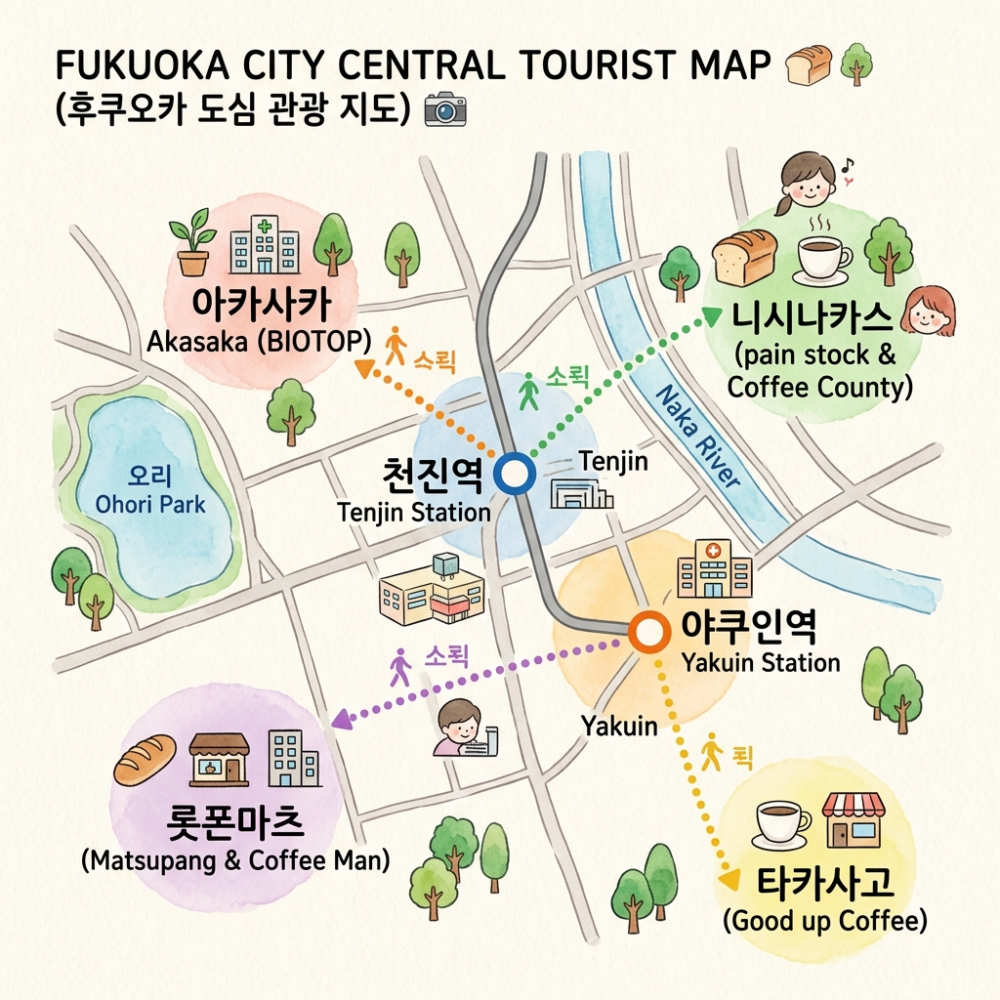

MAY 28 - MAY 30
Fukuoka Trip
라떼 & 베이커리 & 뷰티 매니아를 위한 로컬 가이드
🗺️ 인터랙티브 동선 지도
마커를 터치하여 장소 정보를 확인하세요.

📅 일정별 상세 루트
방문한 장소를 체크하며 이동 경로를 따라가 보세요.
후쿠오카 입국
13:00 - 입국 수속 및 지하철 이동
팡 스톡 & 커피 카운티 니시나카스점
카페 & 빵후쿠오카 3대 빵집과 스페셜티 로스터리의 맛있는 콜라보. 명란 바게트와 부드러운 라떼로 첫날 오후 피로를 풀어보세요.
체크인 & 저녁 식사
숙소(야쿠인/텐진/하카타 인근) 체크인 후 주변 로컬 이자카야 또는 명란 요리 전문점에서 저녁 식사.
마츠빵 & 커피맨 (롯폰마츠)
카페 & 빵현지인들이 줄 서는 작은 빵집 마츠빵에서 빵을 사서, 바로 옆 일본 커피 로스팅 챔피언이 내려주는 깊은 풍미의 카페 라떼와 함께 모닝 식사.
비오톱 후쿠오카 (BIOTOP FUKUOKA)
뷰티 쇼핑도심 속 가든 감성의 3층 규모 편집숍. 1층 뷰티 코너에서 이솝, 딥티크 및 현지 유기농 뷰티 화장품 쇼핑. 3층 루프탑 카페에서 한적하게 티타임 가능.
굿 업 커피 (Good up Coffee)
카페 & 빵타카사고 골목길의 인스타 감성 힐링 공간. 도톰한 통식빵 위에 수제 팥앙금과 버터 조각을 얹은 앙버터 토스트, 그리고 쫀쫀한 스팀 밀크 라떼 조합.
코스메 키친 & 백화점 쇼핑 (텐진)
뷰티 쇼핑텐진 파르코의 코스메 키친에서 천연 메이크업 브랜드(셀보크, 투원)를 둘러보고, 이와타야 백화점에서 SHIRO 사봉 향수 및 THREE 클렌징 오일 득템.
헤드 컨시어지 후쿠오카점 (텐진)
헤드스파 힐링여행의 피로를 싹 씻어줄 궁극의 수면 헤드스파. 텐진 다이묘 거리에서 스파 관리를 받으며 모발 두피 정화 및 릴렉싱 타임.
공항 이동 & 출국
하카타역 또는 텐진역에서 공항선 지하철 탑승 후 후쿠오카 공항 이동, 면세점 쇼핑 후 출국.